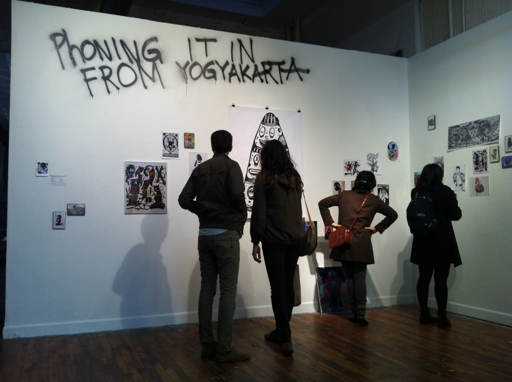

Indonesia is one of the highest populated countries in the world. The island of Java, with 135 million residents, is the most populated island in Indonesia and the center of artistic life in the country. With hundreds of galleries and alternative spaces in Jakarta, Bandung, and Yogyakarta, Java has both a commercial and DIY art scene that compares favorably to cities in Europe and America.
Despite this immensity of activity, the work of young contemporary Indonesian artists is largely unknown here in the US. On a recent trip to Yogyakarta, I was overwhelmed with the flourishing DIY youth art scene, one that I thought would feel at home in Philadelphia and at Space 1026 in particular. A variety of artists active in contemporary installation, painting, drawing, screenprinting, sound art, video and photography; have been invited to phone intheir work through the internet to be printed and displayed in the gallery.
In addition to the work of Javanese artists, I worked with Professor Brent Luvaas of Drexel University to include his photography of streetwear and culture in Java.
Participating Artists: Wedhar Riyadi, Uji Hahan, Rudy Aceh, Ahmad Oka, Diki “Leos” Firmansah, Hendra “HeHe” Harsono, Indun Bonzo, Iyok Prayogo, Janu Satmoko, Riono Tanggul, Taringpadi Collective and Brent Luvaas Links: Space 1026 artspace Philadelphia City Paper Art Blog The St. Claire 